Mill Pond / Cotaco Creek
| 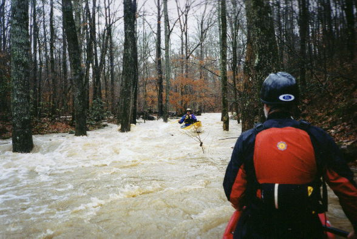 | The upper part with copious water. Below here, is a rapids called Corner Pocket with an undercut on the left that comes into play at high water. |
| 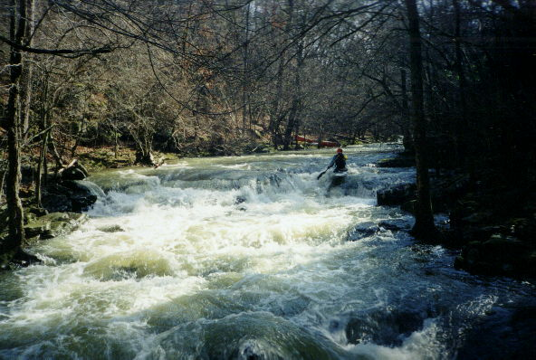 | A marginal lighting situation but a good view of the upper part of the first significant rapid, Debate. Once you hit the first horizon line, things get going. |
| 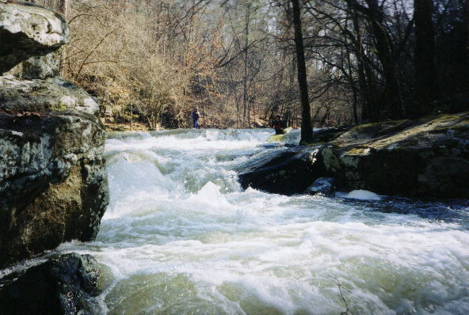 | Debate from a different angle |
| 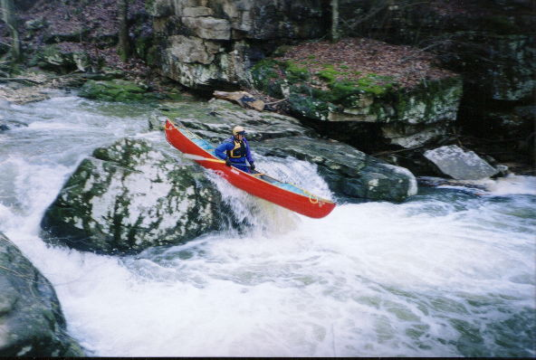 | Dave clears the center slot in Hogs Tooth |
| 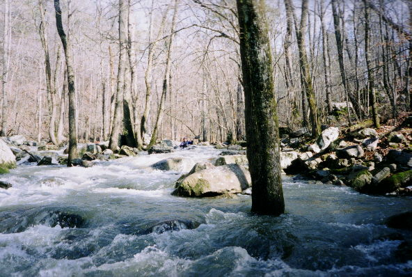 | Richard Brown amongst the rocks and trees of Coondog Corner. The creek splits here and more water would have been nice. All three canoeists had to employ the off bare hand brace technique here. |
| 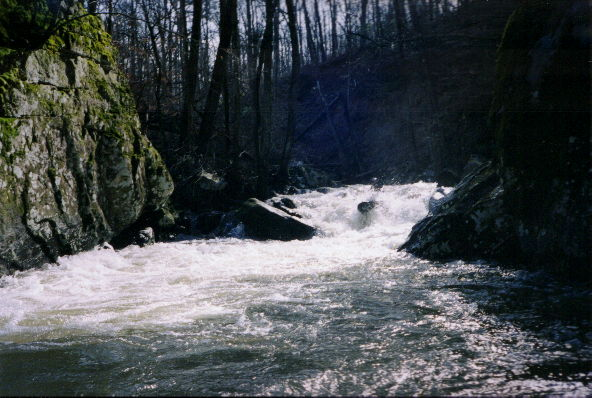 | Richard gets propelled right at the most significant drop, Deep V. That rock on river right is a bit undercut. |
| 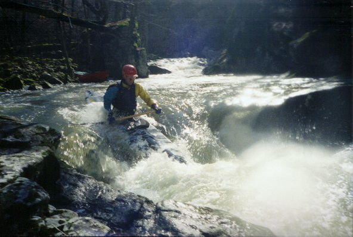 | The next rapid down, with water splotch on the lens. |
| 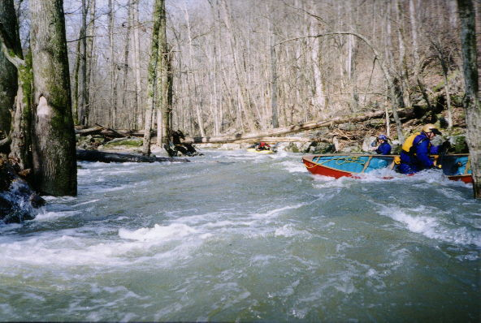 | Gary 'Log Probe' Holder leads the way through Luau. You had to do the limbo some. What is Dave up to in the foreground? |
| 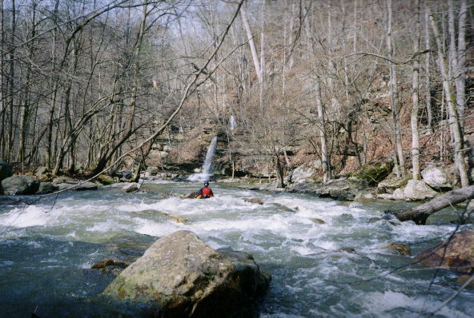 | Pretty. Not far above Sinking Falls. |
| 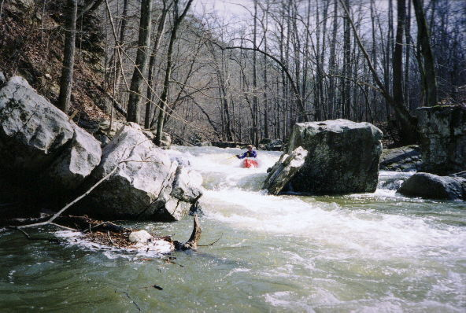 | Dave busts towards a wide slot just Sinking Falls. The sink is on river left below the falls. |
| 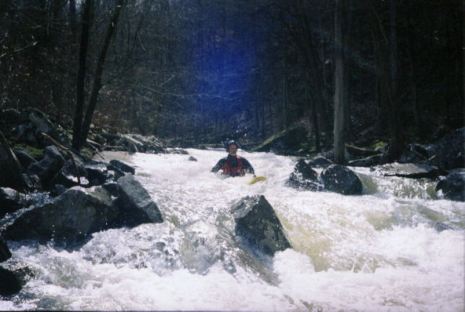 | Gary and his Phat (only slightly visible) |